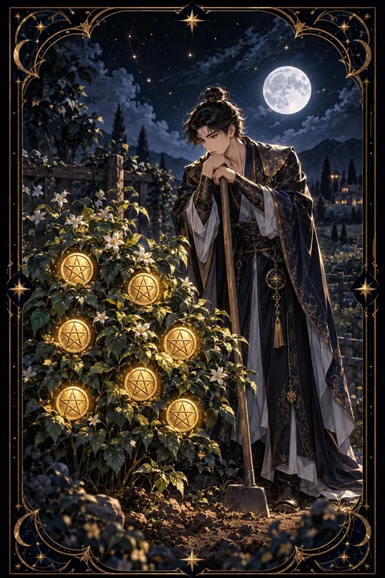

펜타클 7 카드 — 인내와 수확 전의 점검
펜타클 7 카드 한눈에 보기
펜타클 7 카드 상징 읽기

동네보살의 카드 그림은 전통 라이더–웨이트 덱의 뜻을 새 그림으로 옮긴 것입니다. 아래 상징 설명은 전통 덱의 그림을 기준으로 합니다.
한 농부가 괭이에 몸을 기댄 채 금화 일곱 닢이 달린 덤불을 바라보고 있습니다. 푸른 잎이 무성한 덤불은 그동안 들인 노력이 자라 결실의 모양을 갖추었음을 보여 줍니다.
금화는 열매처럼 가지에 매달려 있습니다. 돈과 성과가 한순간에 생기는 것이 아니라 씨를 뿌리고 가꾸는 시간을 거쳐 자라난다는 뜻입니다.
농부는 일손을 잠시 멈추고 생각에 잠겨 있습니다. 그의 표정은 기쁨보다는 신중한 헤아림에 가깝습니다. 지금까지의 노력이 제대로 된 방향이었는지, 앞으로 얼마나 더 기다려야 할지 가늠하는 중간 점검의 순간입니다.
괭이는 아직 일이 끝나지 않았음을 알려 줍니다. 이 카드는 수확 직전의 인내와 함께 무엇을 더 가꾸고 무엇을 정리할지 판단하는 안목을 이야기합니다.
펜타클 7 카드 정방향 뜻
정방향 펜타클 7은 오랜 노력이 서서히 결실을 맺어 가는 시기를 뜻합니다. 저축, 공부, 경력, 관계처럼 시간을 들여 가꾼 것들이 조금씩 눈에 보이는 성과로 나타나기 시작합니다.
다만 이 카드는 수확의 순간이 아니라 그 직전의 점검을 이야기합니다. 지금까지 들인 시간과 노력이 제대로 된 방향으로 흘러왔는지 돌아보고 앞으로의 계획을 다듬을 때입니다.
잘 자라는 부분에는 더 힘을 싣고 성과가 없는 곳에는 과감하게 정리를 하는 판단이 필요합니다. 성과를 공책에 기록하거나 중간 결과를 정리해 두면 앞으로 나아갈 방향이 선명해집니다. 서두르지 않고 기다릴 줄 아는 인내가 지금 가장 큰 힘이며 그 기다림 끝에 넉넉한 수확이 찾아옵니다. 기다리는 동안에도 물을 주고 잡초를 뽑는 꾸준한 손길을 멈추지 않는 것이 중요합니다.
펜타클 7 카드 역방향 뜻
역방향 펜타클 7은 노력한 만큼 성과가 나오지 않아 답답하거나 조급해지는 모습입니다. 오랫동안 공을 들였는데도 결과가 보이지 않아 포기하고 싶은 마음이 들 수 있습니다.
이 카드는 두 가지를 경고합니다. 하나는 조급함입니다. 아직 덜 자란 열매를 서둘러 따려 하면 지금까지의 노력이 헛수고가 될 수 있습니다. 다른 하나는 방향 착오입니다. 애초에 맞지 않는 곳에 시간과 힘을 쏟고 있었을 가능성도 있습니다.
포기하기 전에 방법을 점검해 보세요. 무엇이 효과가 있었고 무엇이 그렇지 않았는지 차분히 따져 보고 계속할 일과 정리할 일을 나누는 것이 좋습니다. 남은 힘을 가능성 있는 곳에 모으면 늦더라도 열매는 맺힙니다. 한 번의 정리는 실패가 아니라 다음 시도를 위한 거름이 됩니다. 조급함을 내려놓으면 보이지 않던 방법이 드러납니다.
연애에서 펜타클 7 카드
혼자인 사람이라면 시간을 들여 사귀는 만남이 어울립니다. 한눈에 끌리는 설렘보다 시간을 두고 쌓이는 신뢰가 관계의 바탕이 됩니다. 이미 알고 지내던 사람과의 관계가 조금씩 무르익고 있을 수 있으니 조급하게 결론을 내리지 말고 꾸준히 대화를 쌓아 가 보세요.
오래 만난 연인이 있다면 지금까지의 관계를 돌아보고 앞으로의 방향을 생각해 볼 때입니다. 함께한 시간 속에서 무엇이 잘 자랐고 무엇이 아쉬웠는지 솔직하게 이야기해 보세요. 결혼이나 동거처럼 큰 결정을 앞두고 있다면 서두르기보다 충분한 시간을 두고 판단하는 것이 좋습니다. 꾸준히 가꾼 사랑은 늦더라도 단단한 열매를 맺습니다. 서로의 속도를 존중하며 기다려 주는 태도가 깊은 신뢰로 돌아옵니다. 작은 기념일을 챙기며 함께 가꾼 시간을 돌아보는 것도 좋습니다.
재회·속마음 질문에서 펜타클 7 카드
재회를 두고 펜타클 7이 나오면 성급한 결론보다 시간을 두는 편이 유리하다는 신호입니다. 상대도 지난 시간을 되짚으며 신중하게 저울질하고 있을 가능성이 있습니다. 헤어진 뒤 자신이 어떻게 달라졌는지 스스로 점검해 보고 같은 문제가 반복되지 않을 준비가 되었는지 확인해 보세요. 조급하게 매달리기보다 꾸준하고 차분한 태도를 보여 줄 때 다시 이어질 여지가 커집니다. 지금 당장 답을 얻으려 하기보다 스스로의 생활을 가꾸며 기다리는 시간이 필요합니다. 연락을 하더라도 무거운 이야기보다 가벼운 안부로 흐름을 살피는 것이 좋습니다. 시간이 무르익으면 자연스럽게 대화의 문이 열립니다.
일·금전에서 펜타클 7 카드
일과 직장에서는 그동안 쌓은 경력과 노력이 서서히 인정받기 시작하는 시기입니다. 당장 눈에 띄는 승진이나 보상이 없더라도 기반은 착실히 다져지고 있습니다. 지금까지의 성과를 정리해 두면 평가나 연봉 협상에서 유용하게 쓸 수 있습니다.
금전 면에서는 꾸준한 저축과 알뜰한 관리가 결실을 맺는 흐름입니다. 단기간에 큰 수익을 노리기보다 장기적으로 쌓아 가는 방식이 어울리며 정기적으로 살림을 점검하는 습관이 도움이 됩니다. 진행 중인 일의 방향이 맞는지 중간 점검을 하고 필요하면 방법을 조정하세요. 꾸준히 쌓은 기록은 이직이나 승진을 준비할 때 설득력 있는 자료가 됩니다. 조급하게 결과를 재촉하기보다 지금의 속도를 믿는 편이 좋습니다.
펜타클 7 카드는 예일까 아니오일까
노력의 결실이 자라고 있지만 아직 거둘 때가 아니라서 시간을 두면 이루어지는 조건부로 읽는 편이 맞습니다. 거꾸로 섰을 때는 방법을 점검하고 바로잡아야 결과가 나온다는 뜻입니다.
자주 묻는 질문
펜타클 7 카드 역방향은 나쁜 뜻인가요?
역방향 펜타클 7은 노력한 만큼 성과가 나오지 않아 답답하거나 조급해지는 모습입니다. 오랫동안 공을 들였는데도 결과가 보이지 않아 포기하고 싶은 마음이 들 수 있습니다.
펜타클 7 카드가 연애 질문에 나오면요?
혼자인 사람이라면 시간을 들여 사귀는 만남이 어울립니다. 한눈에 끌리는 설렘보다 시간을 두고 쌓이는 신뢰가 관계의 바탕이 됩니다. 이미 알고 지내던 사람과의 관계가 조금씩 무르익고 있을 수 있으니 조급하게 결론을 내리지 말고 꾸준히 대화를 쌓아 가 보세요.
타로 카드는 어떻게 뽑나요?
타로 카드 페이지에서 78장을 섞으면 그중 22장이 펼쳐집니다. 마음이 가는 세 장을 고르면 과거·현재·미래 자리에 놓이고, 한 장씩 뒤집어 자리와 방향에 맞는 풀이를 읽습니다. 정방향과 역방향은 섞는 순간 정해집니다.